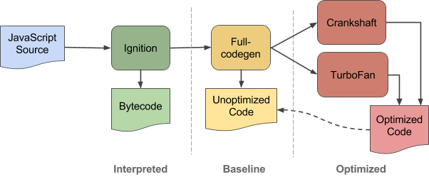

Over the course of my programming life, I've managed to find my way to C++. I think anyone that has a genuine interest in programming, will learn this. It's the underlying architecture of modern web browsers and mobile applications. I've read the code of Chromium, the main project used to develop Chrome. Chromium is the base at which Google have added extra features into their own custom web browser. Along with Chromium, I'm knowledgeable about V8 JavaScript Engine, which is implemented into Chrome to render the JavaScript. It directly translates JavaScript source code into machine code. Here is an architectural hierarchy of how that happens. V8 JavaScript Engine is the main driver in the popular JavaScript server-side runtime environment Node.js.
Boost C++ libraries are useful to any C++ developer who wants to do things like, linear algebra, pseudorandom number generation, multithreading, image processing, regular expressions, and unit testing.

Java is an incredidibly capable language. With applications, ranging from Desktop development, to mobile and backend web development. Spring Boot is particularly useful for creating REST APIs. Java Virtual Machine (JVM) is a engine that provides runtime environment to drive the Java Code or applications. It converts Java bytecode into machines language. JVM is a part of Java Run Environment (JRE). In other programming languages, the compiler produces machine code for a particular system. Java uses a strong typing system to declare object instances and variables. For example String name = "Adam"; is strong typed as the type of object instance is declared at the beginning of a statement. A semicolon ; is used to declare the end of a statement. This is derived from C.

The sanitizer was mainly a learning experience. It helped me understand more about my coding abilities and explore new areas like regular expressions. It takes in 3 files from the command line, a file to search, a blacklisted file and a whitelisted file. It then traverses the file to search, line by line to determine the presence of whitelisted and blacklisted values from their respective files.
Sanitizer source code. 900 lines.